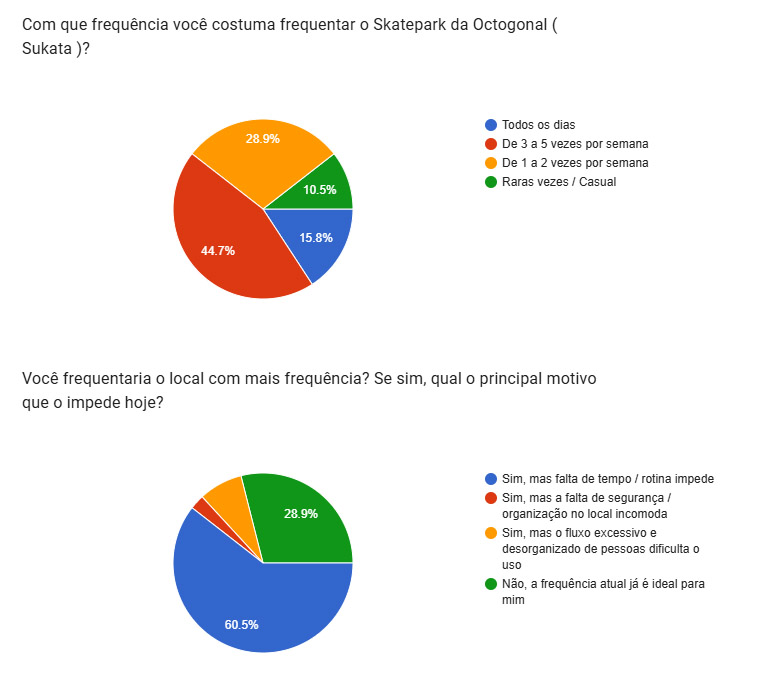
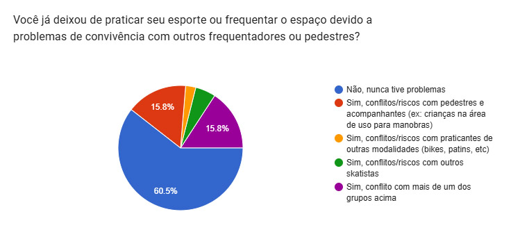
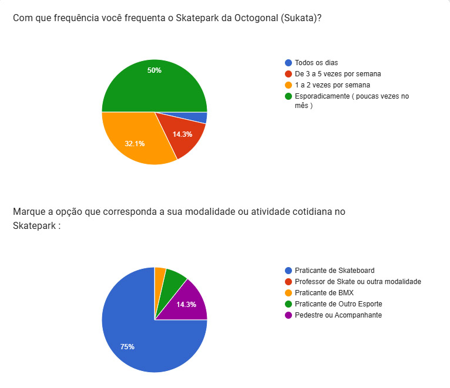
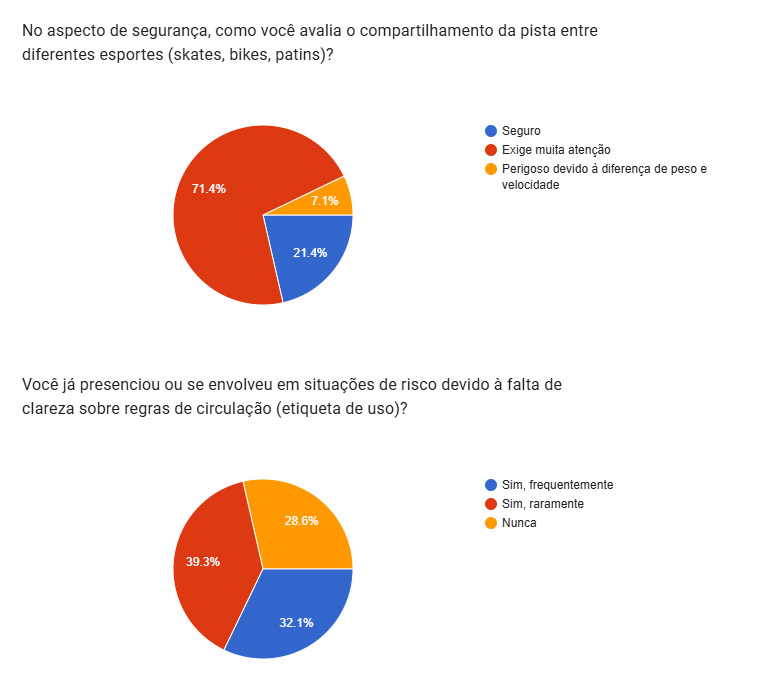
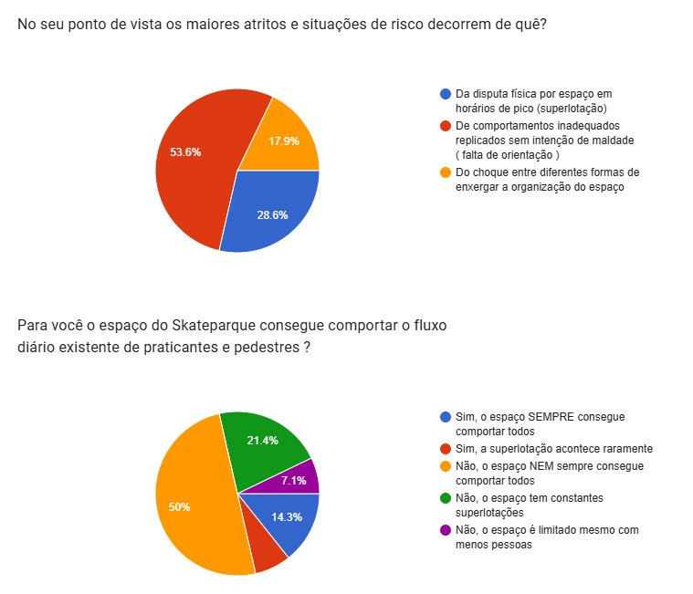
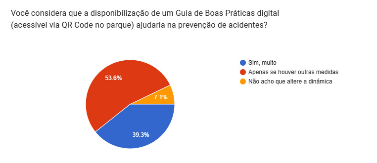

Apresentação dos Dados da Pesquisa
O desenvolvimento metodológico deste projeto extensionista estruturou-se a partir de um diagnóstico participativo dividido em duas etapas complementares de pesquisa de campo, visando mapear a dinâmica real de uso da Sukata Skatepark e fundamentar a criação de soluções voltadas à segurança e à cidadania urbana.
A primeira etapa (Pesquisa 1) concentrou-se na coleta de dados aprofundados com os frequentadores mais assíduos do local durante a semana, utilizando uma amostragem por conveniência dirigida e abordagem direta dividida em seis grupos distintos: adolescentes skatistas, mulheres skatistas, homens skatistas, professores de skate, pedestres e praticantes de outras modalidades. Os resultados iniciais revelaram que 60% dos entrevistados possuem frequência regular, indo ao espaço entre três e sete vezes por semana. Um dado revelador foi que apenas 9% apontaram a organização ou a falta dela como fator de impacto em sua rotina, indicando que a constância está mais atrelada a hábitos individuais.

Contudo, 39% desse grupo relataram já ter presenciado ou vivenciado conflitos entre diferentes frequentadores, evidenciando que a alta recorrência convive com pontos de atrito latentes.

Para abranger os frequentadores de menor frequência e o público flutuante, a segunda etapa (Pesquisa 2) adotou uma amostragem por conveniência e adesão espontânea aberta a todos os presentes no local e alcançados pelas redes sociais do espaço. Neste grupo, 82% apresentaram frequência baixa, com idas de duas vezes por semana ou menos, sendo 75% compostos por skatistas.

Os indicativos da Pesquisa 2 demonstraram que 78% dos participantes enxergam riscos (7%) ou percebem que a prática simultânea de múltiplos esportes no mesmo espaço exige atenção redobrada (71%). Além disso, 71% já enfrentaram problemas ligados à organização do local.

Quando questionados sobre a origem dessas dificuldades, 81% apontaram o conflito entre o tamanho da pista e o fluxo de pessoas nos horários de pico (28%), somado à falta de orientações direcionadas a pessoas não familiarizadas com a dinâmica do skatepark (53%).

Como reflexo dessa percepção, 92% dos entrevistados concordaram que uma solução digital, seja de forma isolada (39%) ou combinada com outras medidas de gestão e coordenação (53%), seria eficaz para mitigar os problemas.

O cruzamento desses dados com as falas e percepções coletadas em campo permitiu compreender que os skatistas veteranos já estão habituados aos atritos cotidianos, tornando o choque de convivência com iniciantes, crianças e praticantes de outras modalidades o ponto mais crítico e urgente a ser resolvido para a prevenção de acidentes. Outro fator determinante destacado pela comunidade é que a escassez de pistas com iluminação adequada no Plano Piloto sobrecarrega a Sukata nos horários de pico, intensificando a superlotação.
Como desdobramento prático dessa investigação, foi desenvolvido o Guia de Convivência e Segurança — Skatepark Octogonal, concebido para atuar como uma ferramenta digital de orientação imediata. O material aborda frentes essenciais como os cuidados com crianças e iniciantes, o respeito às regras de preferência para "dropar", a harmonia na pista compartilhada entre skates, BMX e patins, e a diferenciação clara entre as áreas de fluxo de manobras e as zonas de descanso.